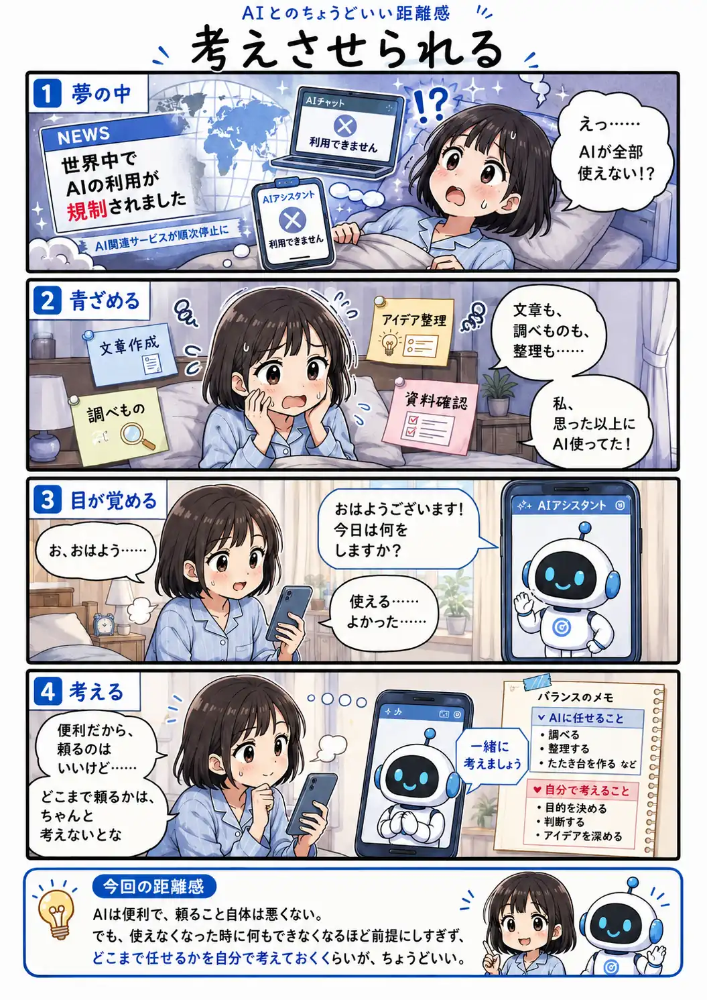

#095
考えさせられる
AIがない日を、ちょっと想像してみた

メモ
道具へ頼ることは、必ずしも悪いことではありません。電卓や検索、クラウドサービスと同じように、AIも仕事を支える道具の一つになりつつあります。
ただ、便利な道具ほど、使えない時に初めて任せていた範囲の広さへ気付くことがあります。
全部を自力へ戻す必要はなくても、自分で判断したい部分や、使えない時の進め方を時々考えておくと、安心して頼り続けられそうです。
今回の距離感
AIは便利で、頼ること自体は悪くない。でも、使えなくなった時に何もできなくなるほど前提にしすぎず、どこまで任せるかを自分で考えておくくらいが、ちょうどいい。